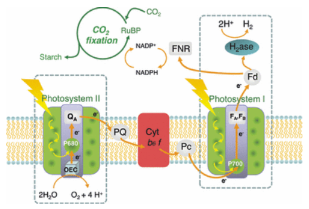

Abstract
In the search for more environmentally sound energy sources, there are many emerging technologies, but few seem to be as promising as artificial photosynthesis. Inspired by photoautotrophs’ ability to naturally and efficiently produce energy-storing molecules from sunlight, scientists have made groundbreaking progress over the past century in employing this process for the benefit of society. Many developing technologies seek to produce an environmentally-friendly fuel that can one day become ubiquitous through the use of plants’ water-splitting pathways or the use of special enzymes that repurpose photosynthesis for our benefit. One such example that serves as the focus of this paper is the “bionic leaf,” originally developed by Patterson Rockwood Professor of Energy at Harvard University Daniel G. Nocera. After announcing the technology in 2011 and creating the company Sun Catalytix in 2012 to focus on it, the project’s expansion was ultimately abandoned due to multiple challenges that made the technology infeasible. However, this project sparked a renewed interest in artificial photosynthesis and many principles from it can be applied in future research, as discussed in conferences on the matter held in 2014 and 2016. In this review, we discuss the photosynthetic process and how exactly Nocera has been able to reimagine the process for the benefit of humanity.
Background
It is conducive to the understanding of the benefits of this technology to first understand how natural photosynthesis works. Photosynthesis is split into two consecutive sets of reactions called the “light-dependent” and “light-independent” (or “dark) reactions respectively [1.2]. Artificial photosynthesis is mainly concerned with the light-dependent phase, which can consist of a set of reactions called either “cyclic” or “non-cyclic” photophosphorylation (the latter being the standard type) [3]. In the non-cyclic variant, two photosystems labeled PSII and PSI are present. The process begins when a pigment like chlorophyll or a carotenoid absorbs sunlight in the light-harvesting complex of the photosystems, exciting electrons. These electrons are all transferred to the reaction-center complex of each photosystem, labeled P680 in PSII and P700 in PSI in green plants and algae due to their maximum wavelengths absorbed [2.3]. Through a series of electron acceptors that make up an “electron transport chain (ETC),” photosystem II’s P680 complex transfers the excited electrons to PSI and replenishes the ones lost in the light-harvesting complex through a process called photolysis. Photolysis is another interest in artificial photosynthesis because of the process’s ability to split water molecules into oxygen gas and hydrogen ions, using the free electrons to replenish lost charges [2,4]. This occurs in the oxygen-evolving complex (OEC), which is exclusively found in photosystem II. At the same time, photosystem I is harvesting its own light. It’s lost electrons are replenished by the incoming electrons from PSII, while the remaining free e- charges enter a second electron transport chain [2].
At the end of the second ETC lies a molecule called nicotinamide adenine dinucleotide phosphate (abbreviated NADP+). NADP+ is an extremely important molecule in cellular processes as it acts as a very important cofactor – it’s considered a coenzyme that acts as a universal electron carrier [1,3,4]. This is very important in photosynthesis; when NADP+ is reduced to form NADPH, it can functionally act as an energy currency to power certain cellular processes. In this case, the end of the ETC sees the reduction of NADP+ into NADPH, concluding the light-dependent stage of photosynthesis [1]. The subsequent light-independent stage is known as the Calvin cycle. Powered by NADPH, the Calvin cycle is responsible for the creation of glucose by forming 3-carbon molecules called 3-phosphoglyceraldehyde (PGAL). This is the final product of photosynthesis and is used to directly power cellular respiration.
Some important molecules and protein complexes are also involved in the light-dependent reactions, especially in the electron transport chains [3]. Each ETC contains a series of oxidizing agents where each electron acceptor is more electronegative than the last. In the ETC linking PSII and PSI, the first electron acceptor is plastoquinone (abbreviated Pq) and the final one is plastocyanin (Pc) [3]. The middle of the series contains a cytochrome complex labeled b6f, which is an enzyme that mediates the electron transfer between Pq and Pc. The next ETC is found after PSI. This ETC has several more molecules involved, but the most important ones are Fd and FNR. Fd, or ferredoxin, is the final electron acceptor of the second ETC [3].
After being reduced by the previous iron-sulfur complex, ferredoxin ends the electron transport process by transferring the enzyme to ferredoxin NADP+ reductase (FNR). The FNR enzyme is responsible for reducing NADP+ and forming NADPH, enabling the dark reactions of photosynthesis to commence [2].
Figure 1: Schematic representation of the photosynthetic chain in the oxygenic photosynthesis.
Indeed, most photoautotrophs work this way – using photosynthesis for the purpose of producing molecules like glucose to later be catabolized to form ATP. However, Fd may take another route [1,2,3]. Under specific conditions, organisms like cyanobacteria can actually produce hydrogen due to the presence of the enzyme hydrogenase (abbreviated H2ase). Hydrogenase synthesizes hydrogen gas by combining H+ ions with electrons contributed by Fd, never allowing FNR to receive said electrons [1,2]. This, along with exploiting photolysis to split water, is what scientists are chiefly interested in [2,3]. Hydrogen is an extremely versatile fuel source that is not only environmentally friendly, but also extremely efficient. It has a remarkably high energy output to molecular weight ratio and does not release greenhouse gases, making it highly sought after in energy research. [1,2] With technologies like the bionic leaf, scientists hope to find and manipulate existing pathways like these in order to produce this fuel. Due to these technologies, major strides continue to be taken in this field and the prospect of using hydrogen as a viable eco-friendly fuel source grows closer.
Current Research- The Bionic Leaf
One of the first attempts to exploit leaves’ photosynthetic pathways is the artificial leaf, a most prolific example of which is the Bionic Leaf. First presented by Daniel G. Nocera to the American Chemical Society in 2011, the Bionic Leaf has since captivated the scientific community with its ability to harness sunlight through modulating and improving upon the common plant’s methods [1]. This groundbreaking innovation combines the elegance of natural sciences with the ingenuity of biotechnology and engineering, opening new avenues for sustainable energy production, which if commercialized, could make a huge impact on the economy.
At its simplest, Nocera’s invention is of two primary components: a catalyst and a genetically engineered microbial system:
The Catalyst
The catalyst, originally a nickel-molybdenum-zinc alloy, acts as a conductor, facilitating photosynthesis outside of a regular cell. Specifically, the catalyst aids through a captivating interplay of chemical reactions; namely, the splitting of water molecules into their elemental components: hydrogen and oxygen, an incredibly difficult transformation [1]. The catalyst harnesses the photons of sunlight, propelling a series of reactions using this cascade of light that initiates the water-splitting. One of the primary reactions facilitated by the catalyst is the oxidation of water (H2O) into oxygen (O2), protons (H+), and electrons (e-). This reaction is often referred to as the oxygen-evolving complex (OEC). The catalyst provides the necessary energy and surface area for water molecules to undergo this oxidation reaction [1]. The next crucial step is the reduction of protons (H+) and electrons (e-) to produce hydrogen gas (H2). This reduction reaction occurs at a separate location on the catalyst's surface. By capturing the protons and electrons generated from the water oxidation, the catalyst enables the production of hydrogen gas, which can serve as a valuable source of clean energy [2]. The overall reaction equation for the water-splitting process facilitated by the catalyst in the Bionic Leaf can be summarized as follows:

Figure 2: Photosynthesis (in Natural and Bionic Leaf)
Microbial System
The second component of the Bionic Leaf, the microbial system, transmutes the generated hydrogen from the water splitting reaction into an invaluable energy carrier—namely, liquid fuels [1,3]. Within the artificial leaf, an extraordinary bacterium biologically engineered for the product exists. This microbe fed by the hydrogen produced by the catalyst, employs its metabolism to ingest carbon dioxide from the surrounding atmosphere, culminating in the synthesis of liquid fuels like propane. Once the hydrogen is available, the microbial catalyst employs its metabolic machinery to initiate a series of reactions. One essential step involves the assimilation of carbon dioxide from the surrounding atmosphere. The microbe's enzymes facilitate the incorporation of carbon dioxide into organic molecules through a process known as carbon fixation. Through this carbon fixation process, the microbe effectively transforms carbon dioxide into complex carbon-based compounds, often in the form of liquid fuels. The microbial system in the Bionic Leaf demonstrates the remarkable ability of microorganisms to serve as biocatalysts, harnessing the energy stored in hydrogen and combining it with atmospheric carbon dioxide to generate valuable liquid fuels. This integration of biological processes with the catalyst's water-splitting function enables the Bionic Leaf to convert solar energy into chemically stored energy in the form of these liquid fuels.
Efficiency and Scalability
The efficiency of the bionic leaf technology is a critical aspect that determines its practicality and competitiveness as a renewable energy solution. Current prototypes have demonstrated promising levels of efficiency, surpassing the efficiency of natural photosynthesis in converting solar energy into chemical energy. However, several challenges still hinder the overall efficiency of the bionic leaf. One of the primary challenges is related to light absorption. Efficient light absorption is crucial for maximizing the energy conversion process. Researchers are actively exploring and developing new light-harvesting materials that can improve the absorption of sunlight across a broader spectrum, allowing for more efficient energy conversion. By enhancing light absorption, the bionic leaf can capture a larger portion of the available solar energy, leading to increased overall efficiency.
Another factor affecting efficiency is catalyst efficiency. Catalysts play a vital role in facilitating the chemical reactions involved in the bionic leaf's energy conversion process. The development of highly efficient catalysts is crucial for improving the speed and effectiveness of these reactions. Ongoing research and development efforts are focused on addressing these challenges to enhance the efficiency of the bionic leaf technology. By improving light absorption, catalyst efficiency, and microbial activity, researchers aim to achieve even higher levels of efficiency, making the bionic leaf more competitive as a renewable energy solution.
Scalability is a crucial consideration for any technology seeking widespread implementation and impact. The technology can be designed and implemented in a modular manner, allowing for easy replication and expansion. Modular designs facilitate the integration of multiple bionic leaf units, which can work together as a larger system, increasing overall energy production capacity. This modularity also provides flexibility in adapting the system to different scales and energy requirements. Integrating the bionic leaf with existing infrastructure is another factor that contributes to its scalability. By leveraging existing infrastructure, such as solar panels or water supply systems, the bionic leaf can tap into readily available resources and minimize the need for extensive infrastructure development.
Materials availability is another consideration for scalability. The bionic leaf technology relies on various materials, such as light-harvesting materials and catalysts, which need to be readily available in large quantities. Ensuring the scalability of the technology requires exploring alternative materials or developing efficient synthesis methods to meet the demand at scale.
The primary limitation of the bionic leaf preventing it from its adoption and integration into the energy sector is its steep price tag. Currently, there are several economic considerations that pose challenges to the commercial viability of the bionic leaf. One significant factor affecting the economic feasibility is the cost of materials, catalysts, and specialized equipment required for the bionic leaf system. The development and production of advanced materials with optimal properties for light absorption and catalyst efficiency can be expensive. Similarly, the synthesis or acquisition of high-performance catalysts can contribute to the overall cost. Additionally, the specialized equipment needed for the integration and operation of the bionic leaf system may require significant investment. To overcome this challenge, further research and development efforts are necessary to identify cost-effective materials and catalysts while exploring alternative manufacturing techniques that reduce production costs. These factors prevent the Bionic Leaf from being adapted into the commercial energy field.
Conclusion
In conclusion, artificial photosynthesis, exemplified by technologies like the Bionic Leaf, offers a promising solution for sustainable and efficient energy production. Inspired by natural photosynthesis, these technologies harness sunlight to convert it into energy-storing molecules, including hydrogen as a clean fuel source. The Bionic Leaf, through its innovative design combining biology and engineering, mimics the photosynthetic pathways of leaves. It utilizes a catalyst and a genetically engineered microbial system to split water into hydrogen and oxygen, enabling the production of valuable liquid fuels. Efficiency and scalability are crucial considerations for these technologies. Enhancing light absorption and catalyst efficiency are ongoing goals to improve energy conversion. Modularity and integration with existing infrastructure enable scalability and adaptability to different energy needs. Economic feasibility remains a challenge due to material costs and specialized equipment. Continued research and development are necessary to identify cost-effective solutions.
Despite challenges, artificial photosynthesis shows great potential to revolutionize energy production and contribute to a greener future. Advancements in this field bring us closer to a sustainable energy landscape.
References
- Reece, S. Y.; Hamel, J. A.; Sung, K.; Jarvi, T. D.; Esswein, A. J.; Pijpers, J. J. H.; Nocera, D. G. Wireless Solar Water Splitting Using Silicon-Based Semiconductors and Earth-Abundant Catalysts. Science 2011, 334 (6056), 645–648.
Available: https://doi.org/10.1126/science.1209816. - Andreiadis, E. S.; Chavarot-Kerlidou, M.; Fontecave, M.; Artero, V. Artificial Photosynthesis: From Molecular Catalysts for Light-Driven Water Splitting to Photoelectrochemical Cells. Photochemistry and Photobiology 2011, 87 (5), 946–964.
Available: https://doi.org/10.1111/j.1751-1097.2011.00966.x. - Asemgul K. Sadvakasova a; a; b; c; d; e; f; g; h; i; Highlights •Critically reviews the cyanobacterial hydrogen production. •Bioprocesses of hydrogen formation by cyanobacterial cells. •Genetic and metabolic engineering approaches towards H2 production from cyanobacteria. •Recent technological progress towards; AbstractDue to the depletion and increasing cost of fossil fuels. Bioprocesses of Hydrogen Production by Cyanobacteria Cells and Possible Ways to Increase Their Productivity.
Available: https://www.sciencedirect.com/science/article/abs/pii/S1364032120303452.
[Accessed July 3, 2023] - Harvard Magazine, Jonathan Shaw, The “Bionic Leaf,” May, 2015. [Online].
Available: https://www.harvardmagazine.com/2015/05/the-bionic-leaf.
[Accessed June 20, 2023]